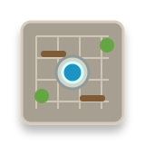
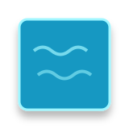
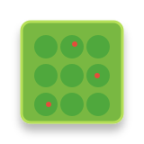
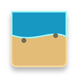

Pass condition: every asset has the right map role, footprint, and readable shadow.
160 x 160 SVG assets




Mixed terrain, roads, farms, buildings, civic tiles, props, and overlays in a tile grid.



